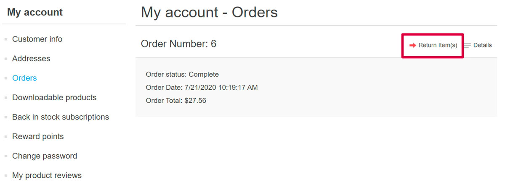
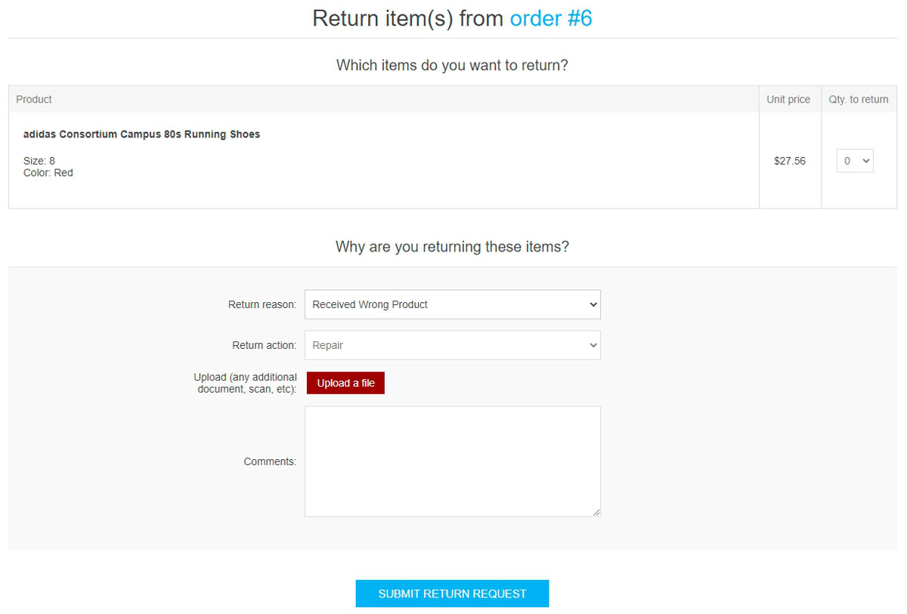
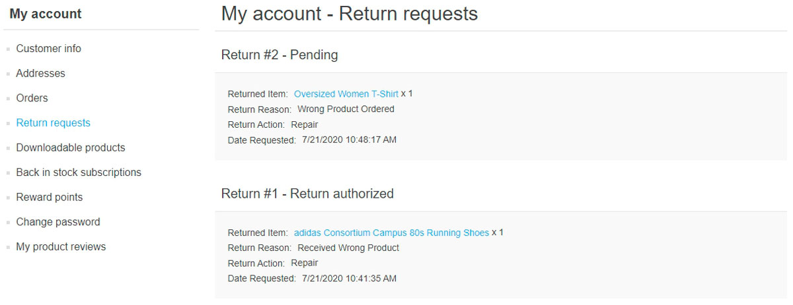
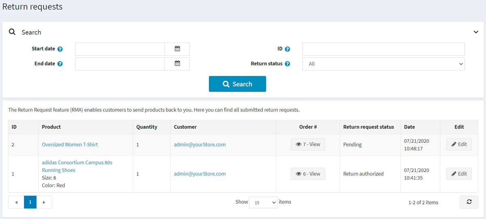
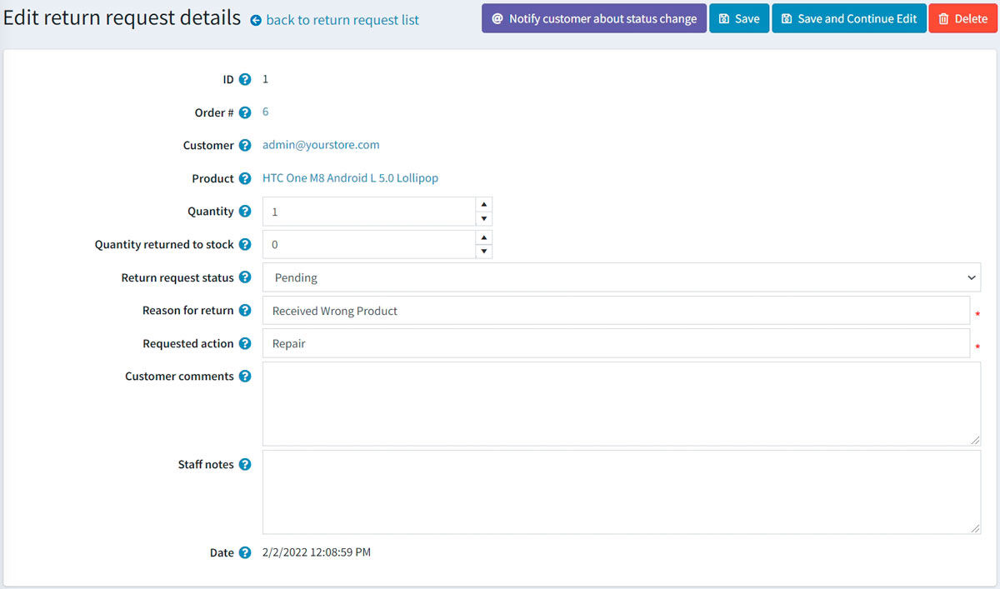
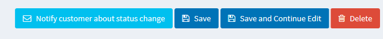
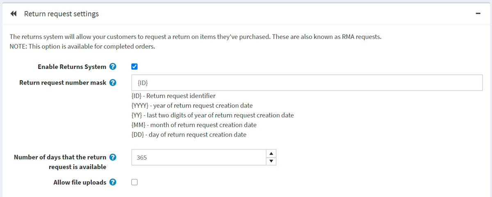
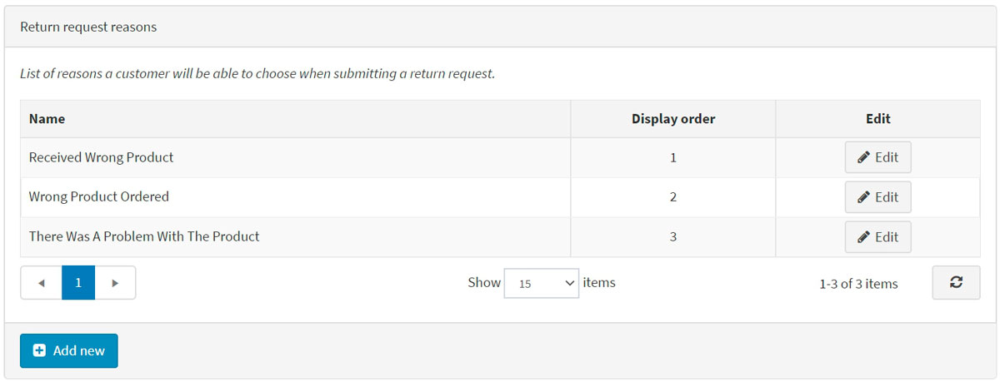
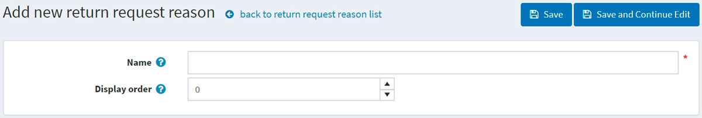
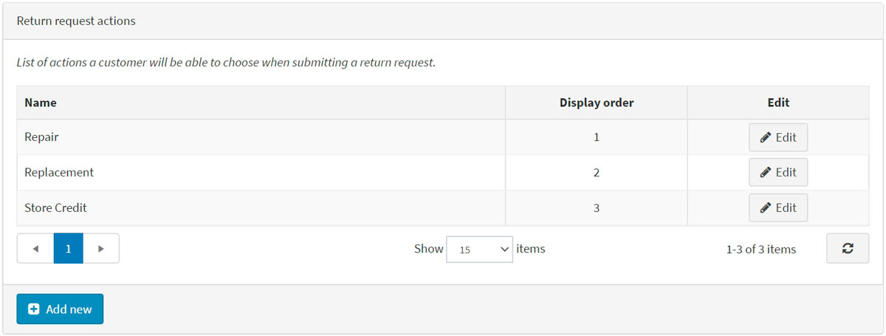

退貨請求
退貨請求功能讓顧客可以針對先前購買的商品提出退貨申請。這些請求也稱為 RMA 請求。此選項僅適用於已完成的訂單。退貨請求的設定是在管理後台的 設定 → 設定 → 訂單設定 中的 退貨請求設定 面板進行管理。
若要啟用退貨請求，請勾選 啟用退貨系統 核取方塊。 啟用此選項後，前台網站的訂單詳細資料頁面中，針對已完成的訂單將會顯示 退貨商品 按鈕。
若要前往 退貨請求設定區段，請按這裡。
在接下來的章節中，我們將說明顧客如何使用退貨請求功能，以及如何在管理後台管理退貨請求。
提交退貨請求
若要提交退貨請求，顧客需採取以下步驟：
在前台商店中，前往「我的帳戶」視窗並點擊 Orders。系統將顯示以下頁面：

點擊欲退貨之已完成訂單旁邊的 Return Item(s) 按鈕。系統將顯示「退貨訂單 # 中的商品」視窗，如下列範例所示：

- Qty to return 下拉式選單可讓您選擇欲退貨的商品數量。
- Return reason 下拉式選單可讓您選擇退貨原因。例如：訂購了錯誤商品、收到了錯誤商品等。請閱讀 下方 關於如何管理退貨原因的說明。
- Return action 下拉式選單可讓您選擇所需的退貨處理方式。例如：商品維修、商品更換、退款等。請閱讀 下方 關於如何管理退貨處理方式的說明。
- 若您想為您的請求附加額外的文件或圖片，請使用 Upload a file 選項。
Note
僅在勾選了 Allow file uploads 核取方塊時，此選項才會顯示。請閱讀 下方 關於如何設定此功能的說明。
- 在 Comments 欄位中，顧客可以輸入選填的備註以提供更多資訊。
在使用退貨請求功能後，顧客可以點擊前台商店「我的帳戶」頁面中的 Return requests，檢視已建立的退貨請求及其狀態：

管理退貨請求
商店擁有者現在可以在管理後台管理此退貨請求。
若要檢視與編輯退貨請求，請前往 銷售 → 退貨請求。所有退貨請求將顯示如下：

點擊退貨請求旁的 編輯；隨即會顯示 編輯退貨請求詳細資料 視窗：

商店管理員可以執行以下操作：
檢視退貨請求 ID。
檢視 訂單編號。點擊訂單編號將重新導向至相關的訂單詳細資料頁面。
檢視 顧客。點擊顧客電子郵件將重新導向至相關的顧客詳細資料頁面。
檢視 商品。點擊商品名稱將重新導向至相關的商品詳細資料頁面。
輸入退回商品的 數量。
填寫 退回庫存數量 欄位。這代表應退回庫存的商品數量。
選擇 退貨請求狀態：
- 待處理 (Pending)
- 已收到 (Received)
- 退貨已授權 (Return authorized)
- 商品已維修 (Item(s) repaired)
- 商品已退款 (Item(s) refunded)
- 請求已拒絕 (Request rejected)
- 已取消 (Cancelled)
如有必要，可在 退貨原因 欄位中編輯退貨原因。
如有必要，可在 請求動作 欄位中編輯請求動作。
如有必要，可在 顧客備註 欄位中編輯顧客輸入的評論。
在 員工註解 欄位中，輸入用於資訊目的的選填註解。這些註解不會顯示給顧客。
檢視提交退貨請求的 日期。
Note
點擊 通知顧客關於狀態變更 按鈕，即可發送電子郵件通知顧客退貨請求的狀態變更。

退貨請求設定
若要定義退貨請求設定，請前往 設定 → 設定 → 訂單設定。
此頁面支援多商店設定；這意味著可以為所有商店定義相同的設定，或為每個商店設定不同的內容。如果您想管理特定商店的設定，請從多商店設定下拉式清單中選擇該商店名稱，並勾選左側對應的核取方塊，以設定自訂值。如需進一步說明，請參閱 多商店。
前往 退貨請求設定 面板：

在此面板中，您可以定義：
啟用退貨系統：讓您的顧客能夠針對已購買的商品提交退貨請求。
退貨請求編號遮罩：若有需要，請在此欄位指定自訂的退貨請求編號格式。
退貨請求有效天數：設定退貨請求連結在顧客專區中可使用的天數。
Tip
例如，如果商店負責人允許購買後 30 天內退貨，則此欄位應設為 30。當顧客登入網站並查看「我的帳戶」時，超過 30 天完成的訂單將不會顯示 退貨商品 按鈕。
允許檔案上傳：若您希望顧客在提交退貨請求時可以上傳檔案（例如圖片），請勾選此項目。此選項對於遇到訂單問題（如收到損壞商品或錯誤產品）的顧客特別實用。
退貨申請原因
此面板列出了顧客在提交退貨申請時可以選擇的原因清單。

點擊 新增 以增加新的申請原因。隨即會顯示 新增退貨申請原因 視窗，如下所示：

輸入退貨申請原因的 名稱 與 顯示順序 數字（1 代表清單中的第一個項目）。點擊 儲存 以儲存變更。
退貨申請動作
此面板列出了顧客在提交退貨申請時可以選擇的動作清單。

點擊 Add new 以新增一個請求動作。此時會顯示「新增退貨申請動作」視窗，如下所示：
輸入退貨申請動作的 Name（名稱）與 Display order（顯示順序）數字（1 代表清單中的第一個項目）。點擊 Save 以儲存變更。